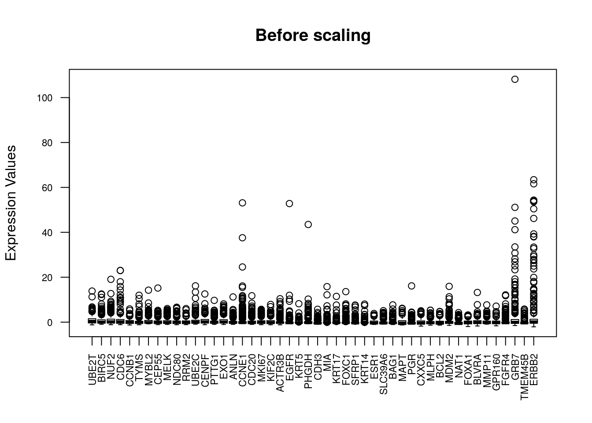
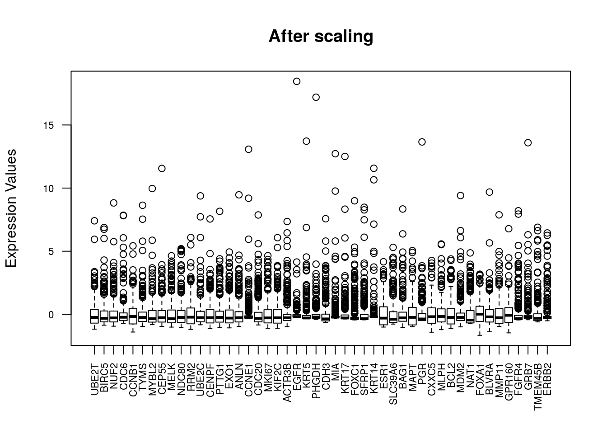
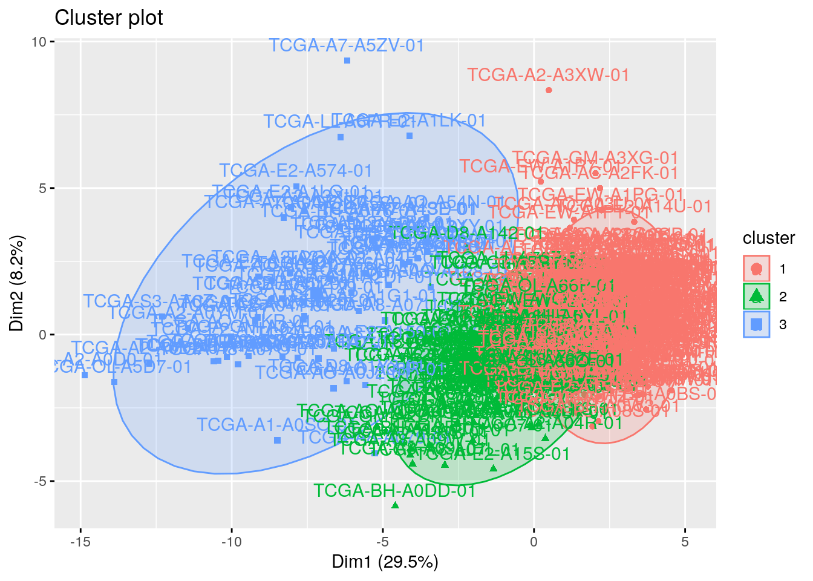
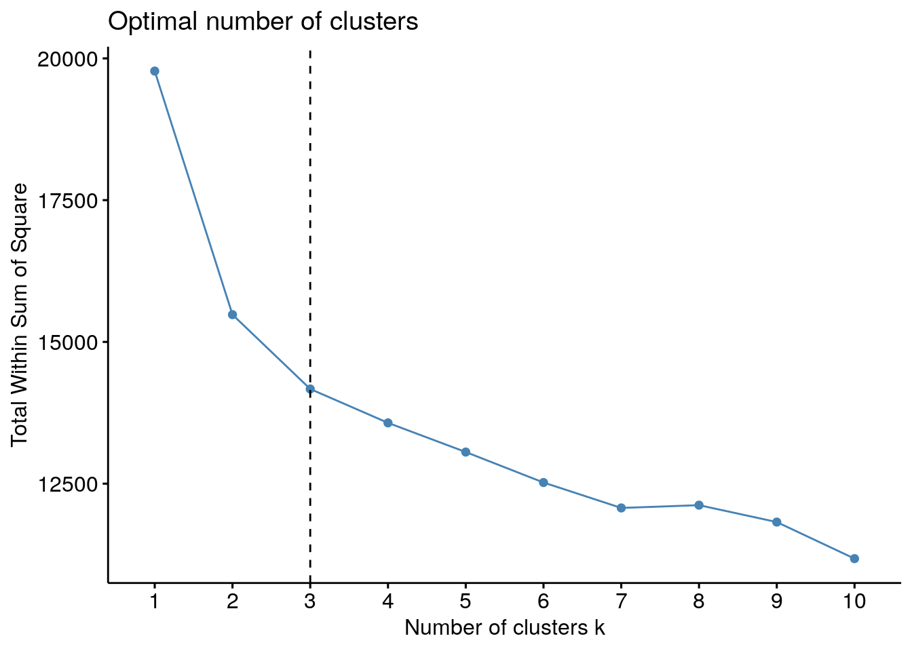
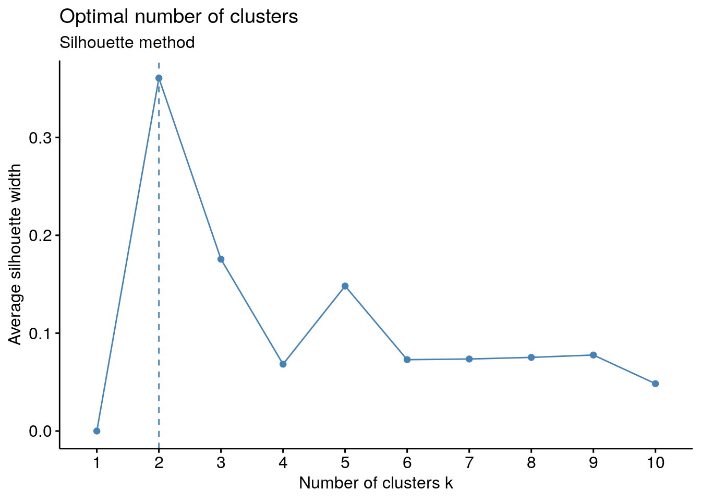
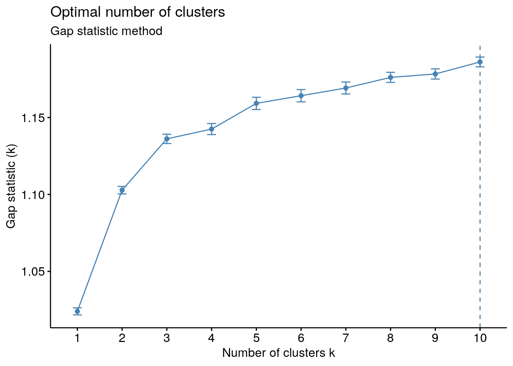
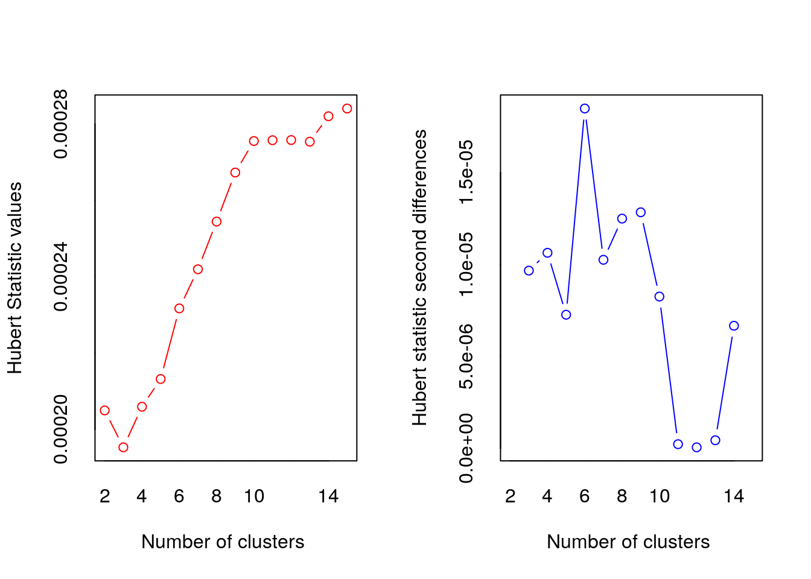
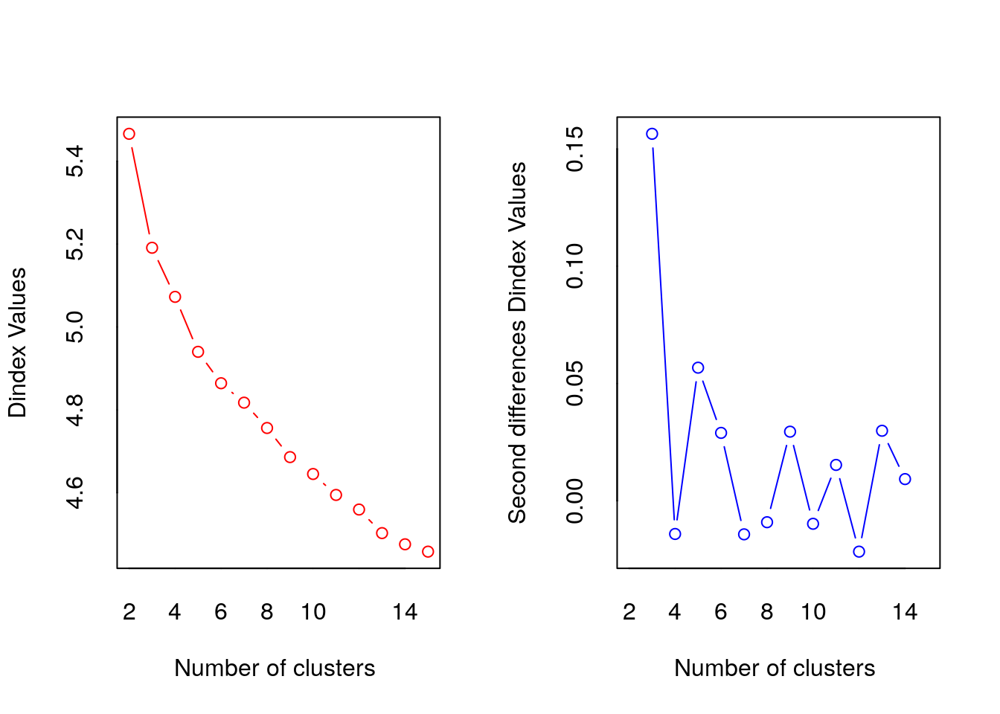

Chapter 11 Clustering
11.1 Data preparation
11.1.1 Load library
11.1.2 Load TCGA data
## [1] 413 49## Sample UBE2T BIRC5 NUF2 CDC6
## 1 TCGA-5T-A9QA-01 1.9323 0.2744 1.7735 1.3728
## 2 TCGA-A1-A0SE-01 0.7931 -0.1335 -0.0023 -0.1102
## 3 TCGA-A1-A0SH-01 -0.6785 -0.4435 -0.9456 -0.7541## [1] 413 48## UBE2T BIRC5 NUF2 CDC6 CCNB1
## TCGA-5T-A9QA-01 1.9323 0.2744 1.7735 1.3728 0.1060
## TCGA-A1-A0SE-01 0.7931 -0.1335 -0.0023 -0.1102 0.1857
## TCGA-A1-A0SH-01 -0.6785 -0.4435 -0.9456 -0.7541 -0.819711.1.3 Vizualize data

11.1.4 Data preparation
To perform a cluster analysis in R, generally, the data should be prepared as follow:
- Rows are observations (individuals) and columns are variables
- Any missing value in the data must be removed or estimated.
- The data must be standardized (i.e., scaled) to make variables comparable.
11.1.5 Check for NA
## [1] 011.1.7 Vizualize data after scaling

11.2 Clustering
We can use 2 clustering approach
- Partitional clustering (or partitioning clustering)
- K-means clustering
- K-medoids clustering or PAM (Partitioning Around Medoids)
CLARA algorithm
- Hierarchical Clustering
- Agglomerative clustering
Divise clustering
11.3 K-means clustering
set.seed(123)
# nstart: The number of random starting partitions when centers is a number. Trying nstart > 1 is often recommended.
# iter.max: The maximum number of iterations allowed. Default value is 10.
# centers = number of clusters
km.res <- kmeans(df, centers = 3, nstart = 25)
str(km.res)## List of 9
## $ cluster : Named int [1:413] 2 1 1 2 2 3 1 3 3 2 ...
## ..- attr(*, "names")= chr [1:413] "TCGA-5T-A9QA-01" "TCGA-A1-A0SE-01" "TCGA-A1-A0SH-01" "TCGA-A1-A0SJ-01" ...
## $ centers : num [1:3, 1:48] -0.538 0.447 1.225 -0.504 0.374 ...
## ..- attr(*, "dimnames")=List of 2
## .. ..$ : chr [1:3] "1" "2" "3"
## .. ..$ : chr [1:48] "UBE2T" "BIRC5" "NUF2" "CDC6" ...
## $ totss : num 19776
## $ withinss : num [1:3] 4812 4503 4855
## $ tot.withinss: num 14169
## $ betweenss : num 5607
## $ size : int [1:3] 238 111 64
## $ iter : int 3
## $ ifault : int 0
## - attr(*, "class")= chr "kmeans"11.3.1 Visualizing k-means clusters in 2D space
It is a good idea to plot the cluster results. These can be used to assess the choice of the number of clusters as well as comparing two different cluster analyses.
The problem is that the data contains more than 2 variables and the question is what variables to choose for the xy scatter plot.
A solution is to reduce the number of dimensions by applying a dimensionality reduction algorithm, such as Principal Component Analysis (PCA), that operates on the four variables and outputs two new variables (that represent the original variables) that you can use to do the plot.
In other words, if we have a multi-dimensional data set, a solution is to perform Principal Component Analysis (PCA) and to plot data points according to the first two principal components coordinates.

11.3.2 Get details of clusters
# A vector of integers (from 1:k) indicating the cluster to which each point is allocated
km.res$cluster %>% head()## TCGA-5T-A9QA-01 TCGA-A1-A0SE-01 TCGA-A1-A0SH-01 TCGA-A1-A0SJ-01
## 2 1 1 2
## TCGA-A1-A0SM-01 TCGA-A1-A0SO-01
## 2 3## UBE2T BIRC5 NUF2 CDC6 CCNB1 TYMS
## 1 -0.5381358 -0.5037394 -0.4172786 -0.3643092 -0.5582258 -0.3818445
## 2 0.4474144 0.3736463 0.1707142 0.6855249 0.5665286 0.1184049
## 3 1.2252081 1.2252380 1.2556722 0.1658175 1.0933293 1.2146258
## MYBL2 CEP55 MELK NDC80 RRM2 UBE2C
## 1 -0.5166326 -0.5067061 -0.5694512 -0.5061323 -0.5454494 -0.4828338
## 2 0.4287505 0.3259956 0.3733934 0.1962653 0.7845567 0.2895321
## 3 1.1776132 1.3189147 1.4700425 1.5417818 0.6676745 1.2933809
## CENPF PTTG1 EXO1 ANLN CCNE1 CDC20
## 1 -0.4730242 -0.4992177 -0.5387736 -0.4657973 -0.26076434 -0.51243416
## 2 0.3295429 0.2618704 0.3440448 0.2841369 -0.03185303 0.09069983
## 3 1.1875077 1.4022845 1.4068616 1.2393838 1.02496246 1.74830699
## MKI67 KIF2C ACTR3B EGFR KRT5 PHGDH
## 1 -0.5067970 -0.5753623 -0.2885008 -0.1060590 -0.1054281 -0.22132843
## 2 0.4517616 0.2775719 -0.1881744 0.0803030 -0.2263553 -0.06734312
## 3 1.1011272 1.6582150 1.3992272 0.2551312 0.7846457 0.93986333
## CDH3 MIA KRT17 FOXC1 SFRP1 KRT14
## 1 -0.2867862 -0.1752148 -0.1274771 -0.3133222 -0.1307482 -0.06439213
## 2 -0.2459070 -0.2189368 -0.2488694 -0.3266296 -0.3521362 -0.18777396
## 3 1.4929813 1.0312986 0.9056883 1.7316653 1.0969563 0.56512870
## ESR1 SLC39A6 BAG1 MAPT PGR CXXC5
## 1 0.3138789 0.2513056 0.1273421 0.3932007 0.2378463 0.2295830
## 2 -0.1451685 -0.1603125 -0.1360777 -0.3421107 -0.2318286 0.1080276
## 3 -0.9154603 -0.6565007 -0.2375439 -0.8688669 -0.4824130 -1.0411221
## MLPH BCL2 MDM2 NAT1 FOXA1 BLVRA
## 1 0.3479332 0.3957708 0.04951648 0.2553808 0.3347050 0.008023586
## 2 -0.1189275 -0.3565101 0.17520655 -0.1495978 0.1577757 0.385061933
## 3 -1.0876118 -0.8534503 -0.48801326 -0.6902389 -1.5183265 -0.697679500
## MMP11 GPR160 FGFR4 GRB7 TMEM45B ERBB2
## 1 -0.07289671 0.09997528 -0.2184167 -0.1917350 0.05079603 -0.1981701
## 2 0.35666940 0.43998710 0.6111470 0.4866052 0.18998569 0.5583575
## 3 -0.34751384 -1.13488569 -0.2477209 -0.1309415 -0.51840419 -0.2314563# withinness of each cluster
# withinss: Vector of within-cluster sum of squares, one component per cluster
km.res$withinss## [1] 4811.568 4502.683 4855.162# Total withinness
# tot.withinss: Total within-cluster sum of squares, i.e. sum(withinss)
km.res$tot.withinss## [1] 14169.41## [1] 14169.41## [1] 238 111 64# Betweenness
# betweenss: The between-cluster sum of squares, i.e. totss−tot.withinss
km.res$betweenss## [1] 5606.587## [1] 1977611.4 Determining The Optimal Number Of Clusters
Determining the optimal number of clusters in a data set is a fundamental issue in partitioning clustering, such as k-means clustering, which requires the user to specify the number of clusters k to be generated.
Unfortunately, there is no definitive answer to this question. The optimal number of clusters is somehow subjective and depends on the method used for measuring similarities and the parameters used for partitioning
These methods include direct methods and statistical testing methods:
- Direct methods: consists of optimizing a criterion, such as the within cluster sums of squares or the average silhouette. The corresponding methods are named elbow and silhouette methods, respectively.
- Statistical testing methods: consists of comparing evidence against null hypothesis. An example is the gap statistic.
In addition to elbow, silhouette and gap statistic methods, there are more than thirty other indices and methods that have been published for identifying the optimal number of clusters.
11.4.1 Elbow method
Basic idea behind partitioning methods, such as k-means clustering, is to define clusters such that the total intra-cluster variation [or total within-cluster sum of square (WSS)] is minimized. The total WSS measures the compactness of the clustering and we want it to be as small as possible.
Elbow method looks at the total WSS as a function of the number of clusters: One should choose a number of clusters so that adding another cluster doesn’t improve much better the total WSS.
The optimal number of clusters can be defined as follow:
- Compute clustering algorithm (e.g., k-means clustering) for different values of k. For instance, by varying k from 1 to 10 clusters.
- For each k, calculate the total within-cluster sum of square (wss).
- Plot the curve of wss according to the number of clusters k.
- The location of a bend (knee) in the plot is generally considered as an indicator of the appropriate number of clusters.
Note that, the elbow method is sometimes ambiguous. An alternative is the average silhouette method (Kaufman and Rousseeuw [1990]) which can be also used with any clustering approach.
# method = c("silhouette", "wss", "gap_stat")
# FUNcluster = kmeans, cluster::pam, cluster::clara, cluster::fanny, hcut
fviz_nbclust(df, FUNcluster = kmeans, method = "wss") + geom_vline(xintercept = 3, linetype = 2)
11.4.2 Average silhouette method
The average silhouette approach measures the quality of a clustering. That is, it determines how well each object lies within its cluster. A high average silhouette width indicates a good clustering.
Average silhouette method computes the average silhouette of observations for different values of k. The optimal number of clusters k is the one that maximize the average silhouette over a range of possible values for k (Kaufman and Rousseeuw 1990).
Steps - Compute clustering algorithm (e.g., k-means clustering) for different values of k. For instance, by varying k from 1 to 10 clusters. - For each k, calculate the average silhouette of observations (avg.sil). - Plot the curve of avg.sil according to the number of clusters k. - The location of the maximum is considered as the appropriate number of clusters.

11.4.3 Gap statistic method
The gap statistic has been published by R. Tibshirani, G. Walther, and T. Hastie (Standford University, 2001).
The gap statistic compares the total within intra-cluster variation for different values of k with their expected values under null reference distribution of the data. The estimate of the optimal clusters will be value that maximize the gap statistic (i.e, that yields the largest gap statistic). This means that the clustering structure is far away from the random uniform distribution of points.
Note that, using B = 500 gives quite precise results so that the gap plot is basically unchanged after an another run.
Steps
- Cluster the observed data, varying the number of clusters from k = 1, …, kmax, and compute the corresponding total within intra-cluster variation Wk.
- Generate B reference data sets with a random uniform distribution. Cluster each of these reference data sets with varying number of clusters k = 1, …, kmax, and compute the corresponding total within intra-cluster variation Wkb.
- Compute the estimated gap statistic as the deviation of the observed Wk value from its expected value Wkb under the null hypothesis: Gap(k)=1B∑b=1Blog(W∗kb)−log(Wk) Compute also the standard deviation of the statistics.
- Choose the number of clusters as the smallest value of k such that the gap statistic is within one standard deviation of the gap at k+1: Gap(k)≥Gap(k + 1)−sk + 1.
# Gap statistic
# nboot = 50 to keep the function speedy.
# recommended value: nboot= 500 for your analysis.
# Use verbose = FALSE to hide computing progression.
set.seed(123)
fviz_nbclust(df, kmeans, nstart = 25, method = "gap_stat", nboot = 5)+
labs(subtitle = "Gap statistic method")
11.4.4 NbClust() function: 30 indices for choosing the best number of clusters
30 indices for choosing the best number of clusters
library(NbClust)
# NbClust(data = NULL, diss = NULL, distance = "euclidean",min.nc = 2, max.nc = 15, method = NULL)
#data: matrix
#diss: dissimilarity matrix to be used. By default, diss=NULL, but if it is replaced by a dissimilarity matrix, distance should be “NULL”
#distance: the distance measure to be used to compute the dissimilarity matrix. Possible values include “euclidean”, “manhattan” or “NULL”.
#min.nc, max.nc: minimal and maximal number of clusters, respectively
#method: The cluster analysis method to be used including “ward.D”, “ward.D2”, “single”, “complete”, “average”, “kmeans” and more. To compute NbClust() for hierarchical clustering, method should be one of c(“ward.D”, “ward.D2”, “single”, “complete”, “average”).
nbc = NbClust(data = df, diss = NULL, distance = "euclidean",min.nc = 2, max.nc = 15, method = "kmeans")
## *** : The Hubert index is a graphical method of determining the number of clusters.
## In the plot of Hubert index, we seek a significant knee that corresponds to a
## significant increase of the value of the measure i.e the significant peak in Hubert
## index second differences plot.
## 
## *** : The D index is a graphical method of determining the number of clusters.
## In the plot of D index, we seek a significant knee (the significant peak in Dindex
## second differences plot) that corresponds to a significant increase of the value of
## the measure.
##
## *******************************************************************
## * Among all indices:
## * 12 proposed 2 as the best number of clusters
## * 8 proposed 3 as the best number of clusters
## * 1 proposed 4 as the best number of clusters
## * 1 proposed 7 as the best number of clusters
## * 1 proposed 10 as the best number of clusters
## * 1 proposed 15 as the best number of clusters
##
## ***** Conclusion *****
##
## * According to the majority rule, the best number of clusters is 2
##
##
## *******************************************************************